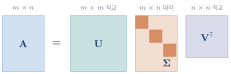
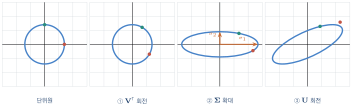
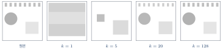
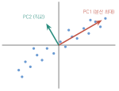
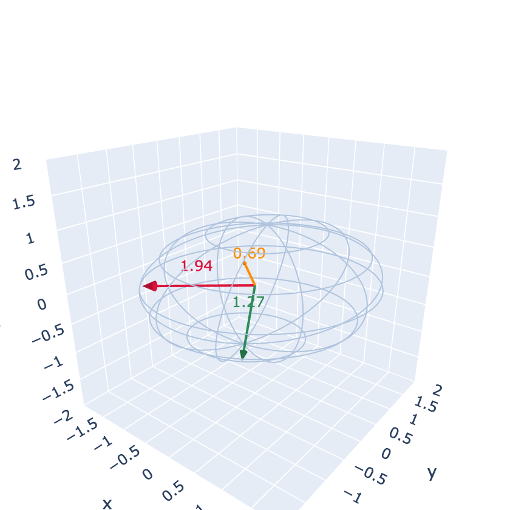

특이값 분해
이 장을 마치면
10장의 고유값 분해에는 두 가지 제약이 있었다. 정방행렬이어야 하고, 고유벡터가 충분해야 한다. 그런데 실제 데이터 행렬은 대개 정방이 아니다. 1000명의 사람에 대해 50개의 특징을 기록한 행렬은 \(1000\times50\)이다.
특이값 분해singular value decomposition, 줄여서 SVD는 이 제약을 모두 없앤다. 모든 행렬이 — 정방이든 아니든, 랭크가 얼마든, 결손이든 아니든 — SVD를 가진다. 그러면서도 고유값 분해가 주던 좋은 성질을 거의 그대로 유지한다.
이 때문에 SVD는 선형대수에서 가장 강력하고 실용적인 도구로 꼽힌다. 데이터 압축, 노이즈 제거, 추천 시스템, 주성분 분석, 그리고 최소제곱 문제의 안정적인 해결이 모두 SVD 위에 서 있다.
11.1 특이값 분해의 정의
정의
임의의 행렬 \(\mm{A} \in \Rmat{m}{n}\)은 다음과 같이 분해된다.
- \(\mm{U} \in \Rmat{m}{m}\)은 직교행렬 (열을 왼쪽 특이벡터left singular vector라 한다)
- \(\mm{V} \in \Rmat{n}{n}\)은 직교행렬 (열을 오른쪽 특이벡터right singular vector라 한다)
- \(\mm{\Sigma} \in \Rmat{m}{n}\)은 대각 위치에만 값이 있는 행렬이며, 그 값 \(\sigma_1 \geq \sigma_2 \geq \cdots \geq 0\)을 특이값singular value이라 한다

import numpy as np
A = np.array([[3., 1., 1.],
[-1., 3., 1.]]) # 2x3 (정방이 아니다!)
U, s, Vt = np.linalg.svd(A)
print('U shape :', U.shape)
print('s :', np.round(s, 6)) # 특이값은 1차원 배열로 나온다
print('Vt shape :', Vt.shape)
# Sigma를 직접 만들어 복원해 보기
Sigma = np.zeros(A.shape)
np.fill_diagonal(Sigma, s)
print('복원 확인 :', np.allclose(U @ Sigma @ Vt, A))
print('U 직교 :', np.allclose(U.T @ U, np.eye(2)))
print('V 직교 :', np.allclose(Vt @ Vt.T, np.eye(3)))U shape : (2, 2) s : [3.464102 3.162278] Vt shape : (3, 3) 복원 확인 : True U 직교 : True V 직교 : True
np.linalg.svd로 분해하고 복원하기np.linalg.svd는 세 가지를 유의해야 한다.
- 특이값을 1차원 배열
s로 돌려준다. 행렬 \(\mm{\Sigma}\)가 아니다. - 세 번째 반환값이 \(\mm{V}\)가 아니라 \(\mm{V}\tp\)다. 변수명을
Vt로 두는 것이 안전하다. - 큰 행렬에서는
full_matrices=False를 주는 것이 좋다. 불필요한 부분을 만들지 않아 메모리와 시간을 아낀다.
고유값 분해와의 비교
| 고유값 분해 | 특이값 분해 | |
|---|---|---|
| 형태 | \(\mm{A} = \mm{V}\mm{\Lambda}\mm{V}\inv\) | \(\mm{A} = \mm{U}\mm{\Sigma}\mm{V}\tp\) |
| 적용 대상 | 정방 + 대각화 가능 | 모든 행렬 |
| 양쪽 행렬 | 같다 (\(\mm{V}\)와 \(\mm{V}\inv\)) | 다르다 (\(\mm{U}\)와 \(\mm{V}\tp\)) |
| 직교성 | 대칭행렬일 때만 | 항상 |
| 대각 성분 | 실수 또는 복소수 | 항상 0 이상의 실수 |
| 정렬 | 정해진 순서 없음 | 내림차순 |
| 수치 안정성 | 결손이면 불안정 | 항상 안정 |
표를 보면 SVD가 고유값 분해의 모든 약점을 보완한다는 것을 알 수 있다. 다만 SVD는 \(\mm{A}\)를 자기 자신에게 되돌리는 분해가 아니므로, 거듭제곱 \(\mm{A}^k\) 계산에는 쓸 수 없다(가운데 \(\mm{V}\tp\mm{U}\)가 소거되지 않는다). 반복 동역학에는 고유값, 데이터 분석에는 특이값이 대체로 맞는 선택이다.
특이값은 어디서 오는가
SVD와 고유값 분해는 무관하지 않다. 식 \(\eqref{eq:ch11_svd}\)을 이용해 \(\mm{A}\tp\mm{A}\)를 계산해 보자.
\(\mm{\Sigma}\tp\mm{\Sigma}\)는 대각성분이 \(\sigma_i^2\)인 대각행렬이다. 그런데 이 식은 정확히 대칭행렬 \(\mm{A}\tp\mm{A}\)의 직교 대각화 형태다.
3장 연습문제에서 "\(\mm{A}\tp\mm{A}\)는 항상 대칭"임을 확인했던 것이 여기서 결실을 맺는다.
import numpy as np
rng = np.random.default_rng(0)
A = rng.normal(0, 1, (5, 3))
U, s, Vt = np.linalg.svd(A, full_matrices=False)
w, V = np.linalg.eigh(A.T @ A) # 대칭이므로 eigh
print('특이값의 제곱 :', np.round(np.sort(s ** 2)[::-1], 6))
print('A.T A의 고유값:', np.round(np.sort(w)[::-1], 6))
print('일치 :', np.allclose(np.sort(s ** 2)[::-1], np.sort(w)[::-1]))특이값의 제곱 : [9.928184 2.921811 0.112128] A.T A의 고유값: [9.928184 2.921811 0.112128] 일치 : True
개념적으로는 \(\mm{A}\tp\mm{A}\)의 고유값을 구해 특이값을 얻을 수 있지만, 실제 계산에서 이렇게 하면 안 된다. \(\mm{A}\tp\mm{A}\)를 만드는 순간 조건수가 제곱이 되어 정밀도가 절반으로 떨어지기 때문이다. 작은 특이값은 아예 사라져 버릴 수도 있다. 반드시 np.linalg.svd를 직접 쓰자.
특이값이 알려 주는 것
특이값은 그 행렬의 "성격"을 압축한 숫자들이다.
| 값 | 의미 |
|---|---|
| \(\sigma_1\) (최대) | 벡터를 최대 몇 배까지 늘이는가 |
| 0이 아닌 특이값의 개수 | \(\rank(\mm{A})\) |
| \(\sigma_1/\sigma_{\min}\) | 조건수 (수치적 민감도) |
| \(\prod \sigma_i\) (정방일 때) | \(\abs{\det(\mm{A})}\) |
| \(\sum \sigma_i^2\) | 프로베니우스 노름의 제곱 (전체 에너지) |
import numpy as np
A = np.array([[4., 0.],
[3., -5.]])
s = np.linalg.svd(A, compute_uv=False)
print('특이값 :', np.round(s, 6))
print('rank :', np.sum(s > 1e-10), np.linalg.matrix_rank(A))
print('조건수 :', round(s[0] / s[-1], 6), round(np.linalg.cond(A), 6))
print('|det| :', round(np.prod(s), 6), round(abs(np.linalg.det(A)), 6))
print('Frobenius :', round(np.sqrt((s ** 2).sum()), 6),
round(np.linalg.norm(A, 'fro'), 6))특이값 : [6.324555 3.162278] rank : 2 2 조건수 : 2.0 2.0 |det| : 20.0 20.0 Frobenius : 7.071068 7.071068
랭크를 판정할 때는 행렬식이 아니라 특이값을 보아야 한다. 부동소수점 오차 때문에 이론적으로 0이어야 할 특이값이 \(10^{-16}\) 같은 작은 값으로 나오는데, 적절한 문턱값(보통 \(\sigma_1 \times\) 기계 정밀도)보다 작으면 0으로 간주한다. np.linalg.matrix_rank가 내부적으로 하는 일이 정확히 이것이다.
11.2 특이값 분해의 기하적 의미
모든 행렬은 회전 \(\to\) 확대 \(\to\) 회전이다
\(\mm{A}\vv{x} = \mm{U}\mm{\Sigma}\mm{V}\tp\vv{x}\)를 오른쪽부터 읽어 보자.
10장의 대각화와 구조가 같지만 결정적인 차이가 하나 있다. 대각화에서는 앞뒤가 \(\mm{V}\inv\)과 \(\mm{V}\)로 서로 반대인 같은 회전이었지만, SVD에서는 \(\mm{V}\tp\)와 \(\mm{U}\)로 서로 다른 회전이다. 이 자유도 덕분에 모든 행렬을 다룰 수 있게 된다.
단위원은 어떤 행렬을 통과해도 타원이 된다. 그 타원의 축 방향이 \(\mm{U}\)의 열이고, 축의 길이가 특이값 \(\sigma_i\)다. 그리고 그 축으로 가게 될 원래 방향이 \(\mm{V}\)의 열이다.
import numpy as np
from tuvis import *
A = np.array([[2., 1.5],
[0.5, 1.]])
U, s, Vt = np.linalg.svd(A)
t = np.linspace(0, 2 * np.pi, 200)
circle = np.column_stack([np.cos(t), np.sin(t)])
dots = circle[::20]
stages = [(np.eye(2), 'start (unit circle)'),
(Vt, 'step 1: V.T (rotate)'),
(np.diag(s) @ Vt, 'step 2: Sigma (stretch)'),
(U @ np.diag(s) @ Vt, 'step 3: U (rotate) = A')]
fig, axes = new_axes(xlim=(-3, 3), ylim=(-3, 3), ncols=4)
for ax, (M, title) in zip(axes, stages):
C = transform(M, circle)
draw_curve(ax, C, color='steelblue', width=3)
draw_points(ax, transform(M, dots), color='crimson', s=18)
ax.set_title(title, fontsize=9)
print('특이값 :', np.round(s, 4))
print('타원의 반장축, 반단축과 같다')
fig.show()
\(\mm{V}\)와 \(\mm{U}\)가 짝을 이룬다
식 \(\eqref{eq:ch11_svd}\)을 오른쪽에서 \(\mm{V}\)를 곱하면 (\(\mm{V}\tp\mm{V}=\Id\)이므로)
를 얻는다. 아주 깔끔한 관계다. \(\mm{A}\)는 \(i\)번째 오른쪽 특이벡터를 \(\sigma_i\)배 하여 \(i\)번째 왼쪽 특이벡터로 보낸다.
이것은 고유값 방정식 \(\mm{A}\vv{v} = \lambda\vv{v}\)와 닮았지만 결정적으로 다르다. 고유값에서는 들어간 벡터와 나온 벡터의 방향이 같아야 했지만, 여기서는 서로 다른 벡터여도 된다. 그 완화 덕분에 모든 행렬이 SVD를 갖게 되는 것이다.
import numpy as np
from tuvis import *
A = np.array([[2., 1.5],
[0.5, 1.]])
U, s, Vt = np.linalg.svd(A)
V = Vt.T
for i in range(2):
print(f'A v{i} == sigma{i} u{i} :',
np.allclose(A @ V[:, i], s[i] * U[:, i]))
fig, (ax1, ax2) = new_axes(xlim=(-3, 3), ylim=(-3, 3), ncols=2)
t = np.linspace(0, 2 * np.pi, 200)
circle = np.column_stack([np.cos(t), np.sin(t)])
draw_curve(ax1, circle, color='lightgray', width=2)
draw_vector(ax1, V[:, 0], color='crimson', label='v1')
draw_vector(ax1, V[:, 1], color='royalblue', label='v2')
ax1.set_title('input: orthogonal v1, v2')
E = transform(A, circle)
draw_curve(ax2, E, color='steelblue', width=3)
draw_vector(ax2, s[0] * U[:, 0], color='crimson', label='s1 u1')
draw_vector(ax2, s[1] * U[:, 1], color='royalblue', label='s2 u2')
ax2.set_title('output: still orthogonal!')
fig.show()A v0 == sigma0 u0 : True A v1 == sigma1 u1 : True
SVD가 말하는 것: 어떤 행렬이든, 서로 직교하는 입력 방향들을 골라 넣으면 출력도 서로 직교하도록 만들 수 있다.
이것이 SVD의 기하적 본질이다. 직교성이 입력에서도 출력에서도 유지되는 특별한 방향 쌍이 반드시 존재하며, 그것을 찾아 주는 것이 SVD다.
랭크-1 조각의 합
5장에서 배운 네 번째 관점(랭크-1 조각의 합)을 SVD에 적용하면 다음 표현을 얻는다.
특이값이 내림차순으로 정렬되어 있다는 사실이 여기서 결정적으로 중요해진다. 앞쪽 조각일수록 원래 행렬을 더 많이 설명한다. 그렇다면 뒤쪽 조각을 버려도 되지 않을까? 이것이 다음 절의 주제다.
import numpy as np
from tuvis import *
rng = np.random.default_rng(0)
A = rng.normal(0, 1, (6, 6))
U, s, Vt = np.linalg.svd(A)
fig, axes = new_matrix_axes(ncols=4)
partial = np.zeros_like(A)
for k, ax in enumerate(axes[:3]):
piece = s[k] * np.outer(U[:, k], Vt[k, :])
partial += piece
show_matrix(ax, piece, fmt='', title=f'sigma{k} u{k} v{k}.T')
show_matrix(axes[3], A, fmt='', title='A (sum of all 6)')
full = sum(s[i] * np.outer(U[:, i], Vt[i, :]) for i in range(6))
print('모든 조각의 합 == A :', np.allclose(full, A))
print('특이값 :', np.round(s, 4))
fig.show()11.3 저계수 근사와 데이터 압축
앞쪽 몇 개만 남기기
식 \(\eqref{eq:ch11_sum}\)에서 앞의 \(k\)개 항만 남기고 나머지를 버려 보자.
이 \(\mm{A}_k\)는 랭크가 \(k\)인 행렬이며, 원래 행렬 \(\mm{A}\)의 근사다. 놀라운 사실은 이것이 가능한 모든 랭크-\(k\) 행렬 중 최선의 근사라는 점이다.
랭크가 \(k\) 이하인 모든 행렬 \(\mm{B}\)에 대하여
이 정리가 SVD를 데이터 과학의 필수 도구로 만든 이유다. "가장 중요한 \(k\)개의 성분만 남긴다"는 직관적인 조작이 수학적으로 최적임을 보장해 준다.
에너지와 설명력
버려진 정보의 양을 재는 자연스러운 척도가 있다. 특이값의 제곱을 "에너지"로 보고, 앞쪽 \(k\)개가 전체의 몇 퍼센트를 차지하는지 계산하는 것이다.
import numpy as np
import matplotlib.pyplot as plt
rng = np.random.default_rng(0)
# 랭크가 사실상 3인 행렬 만들기 (약간의 잡음 포함)
B = rng.normal(0, 1, (50, 3)) @ rng.normal(0, 1, (3, 40))
A = B + 0.05 * rng.normal(0, 1, (50, 40))
s = np.linalg.svd(A, compute_uv=False)
energy = np.cumsum(s ** 2) / np.sum(s ** 2)
fig, (ax1, ax2) = plt.subplots(1, 2, figsize=(9.5, 3.6))
ax1.semilogy(s, 'o-', ms=4)
ax1.set_xlabel('index'); ax1.set_ylabel('singular value')
ax1.grid(True, alpha=0.3); ax1.set_title('singular values (log)')
ax2.plot(np.arange(1, len(s) + 1), energy * 100, 'o-', ms=4)
ax2.axhline(99, ls='--', color='gray')
ax2.set_xlabel('k'); ax2.set_ylabel('explained %')
ax2.grid(True, alpha=0.3); ax2.set_title('cumulative energy')
plt.tight_layout(); plt.show()
print('상위 3개가 설명하는 비율 :', round(energy[2] * 100, 4), '%')
print('rank (수치적) :', np.linalg.matrix_rank(A))상위 3개가 설명하는 비율 : 99.9295 % rank (수치적) : 40
수치적 랭크는 40이지만, 실제로는 3개의 성분이 99.9%를 설명한다. 나머지 37개는 잡음이다. 특이값 그래프를 로그 눈금으로 그리면 3번째 이후로 뚝 떨어지는 "무릎"이 보이는데, 이 지점이 신호와 잡음의 경계다. SVD가 노이즈 제거에 쓰이는 이유가 여기에 있다.
이미지 압축 실습
이미지 한 장은 행렬이다(3장). 그렇다면 SVD로 압축할 수 있다. 외부 이미지 파일 없이, 넘파이로 그림을 하나 만들어 실험해 보자.
import numpy as np
import matplotlib.pyplot as plt
def make_image(n=128):
"""넘파이만으로 테스트 이미지를 만든다 (원, 사각형, 줄무늬)."""
y, x = np.mgrid[0:n, 0:n] / n # 0~1 좌표 격자
img = np.zeros((n, n))
img += 0.6 * (((x - 0.35) ** 2 + (y - 0.35) ** 2) < 0.04) # 원
img += 0.9 * ((x > 0.55) & (x < 0.9) & (y > 0.55) & (y < 0.85)) # 사각형
img += 0.4 * (np.sin(30 * x) > 0) * (y > 0.9) # 줄무늬
img += 0.25 * y # 그러데이션
return np.clip(img, 0, 1)
img = make_image(128)
U, s, Vt = np.linalg.svd(img, full_matrices=False)
ranks = [1, 5, 20, 128]
fig, axes = plt.subplots(1, 5, figsize=(15, 3.2))
axes[0].imshow(img, cmap='gray'); axes[0].set_title('original')
for ax, k in zip(axes[1:], ranks):
approx = U[:, :k] @ np.diag(s[:k]) @ Vt[:k, :]
ax.imshow(np.clip(approx, 0, 1), cmap='gray')
ratio = k * (128 + 128 + 1) / (128 * 128) * 100
ax.set_title(f'k={k} ({ratio:.0f}% size)', fontsize=9)
for ax in axes:
ax.set_xticks([]); ax.set_yticks([])
plt.tight_layout(); plt.show()
for k in ranks:
approx = U[:, :k] @ np.diag(s[:k]) @ Vt[:k, :]
err = np.linalg.norm(img - approx, 'fro') / np.linalg.norm(img, 'fro')
print(f'k={k:4d}: 상대 오차 {err:.4f}, '
f'저장 성분 {k*(128+128+1):6d} / {128*128}')k= 1: 상대 오차 0.5497, 저장 성분 257 / 16384 k= 5: 상대 오차 0.0904, 저장 성분 1285 / 16384 k= 20: 상대 오차 0.0259, 저장 성분 5140 / 16384 k= 128: 상대 오차 0.0000, 저장 성분 32896 / 16384

\(k=1\)일 때는 거의 알아볼 수 없지만 \(k=20\)이면 원본과 구별하기 어렵다. 그런데 저장해야 할 숫자는 5140개로 원본 16384개의 약 31%다. 데이터의 3분의 1만 가지고도 눈에는 거의 같은 그림을 만들 수 있는 것이다.
\(m\times n\) 이미지를 랭크 \(k\)로 근사하면 저장해야 할 숫자는 \(\mm{U}\)의 \(mk\)개, \(\mm{V}\)의 \(nk\)개, 특이값 \(k\)개를 합해 \(k(m+n+1)\)개다. 원본이 \(mn\)개이므로 압축이 되려면
실제 JPEG는 SVD가 아니라 이산 코사인 변환(DCT)을 쓴다. SVD는 이미지마다 \(\mm{U}\)와 \(\mm{V}\)를 따로 저장해야 해서 비효율적이기 때문이다. 그럼에도 SVD 압축을 배우는 이유는 "중요한 성분만 남긴다"는 아이디어의 가장 순수한 형태이기 때문이다. 이 아이디어는 이미지가 아니라 추천 시스템의 평점 행렬, 문서-단어 행렬, 신경망의 가중치 행렬에서 훨씬 큰 위력을 발휘한다.
거대 언어 모델을 특정 용도에 맞게 미세조정하려면 수십억 개의 가중치를 모두 갱신해야 한다. 비용이 엄청나다.
LoRALow-Rank Adaptation는 이 문제를 저계수 근사로 해결한다. 가중치 행렬 \(\mm{W}\)를 통째로 바꾸는 대신, 변화량만 저계수 행렬로 표현하는 것이다.
이 방법이 통하는 이유는 미세조정에 필요한 변화가 실제로 저계수 구조를 갖기 때문이다. 이 장에서 배운 "특이값이 빠르게 감쇠하면 앞쪽 몇 개로 충분하다"는 관찰이 수천억 규모 모델에서도 그대로 성립하는 것이다.
11.4 주성분 분석
데이터가 가장 많이 퍼진 방향
1000명의 (키, 몸무게, 발 크기, 앉은키) 데이터가 있다고 하자. 네 개의 특징은 서로 강하게 연관되어 있다. 키가 큰 사람은 대체로 몸무게도 많이 나가고 발도 크다. 그렇다면 이 데이터를 하나의 축으로 요약할 수 있지 않을까? "체격"이라는 이름을 붙일 수 있는 축 말이다.
주성분 분석Principal Component Analysis, 줄여서 PCA는 바로 이런 축을 찾는 방법이다. 정확히 말하면 데이터가 가장 많이 퍼져 있는 방향을 차례로 찾는다.

공분산행렬과 SVD
"퍼진 정도"를 재는 척도는 분산이다. 여러 특징 사이의 관계까지 담으려면 공분산행렬covariance matrix이 필요하다.
데이터 행렬 \(\mm{X} \in \Rmat{n}{d}\)(행이 샘플, 열이 특징)에서 각 열의 평균을 뺀 중심화centering 행렬을 \(\mm{X}_c\)라 할 때
공분산행렬은 대칭이므로 10장의 스펙트럼 정리에 따라 직교 대각화된다. 그리고 그 고유벡터가 주성분, 고유값이 그 방향의 분산이다.
그런데 굳이 \(\mm{C}\)를 만들 필요가 없다. 11.1절에서 보았듯 \(\mm{X}_c\tp\mm{X}_c\)의 고유벡터는 \(\mm{X}_c\)의 오른쪽 특이벡터이기 때문이다.
PCA = 중심화한 데이터 행렬의 SVD
PCA 직접 구현하기
import numpy as np
from tuvis import *
def pca(X, k=None):
"""주성분 분석. X는 (샘플 x 특징) 행렬."""
X = np.asarray(X, dtype=float)
mean = X.mean(axis=0)
Xc = X - mean # ① 중심화
U, s, Vt = np.linalg.svd(Xc, full_matrices=False) # ② SVD
n = X.shape[0]
var = s ** 2 / (n - 1) # ③ 각 주성분의 분산
ratio = var / var.sum() # ④ 설명 비율
if k is None:
k = len(s)
Z = Xc @ Vt[:k].T # ⑤ 저차원 좌표
return Z, Vt[:k], var[:k], ratio[:k], mean
# 상관관계가 강한 2차원 데이터 만들기
rng = np.random.default_rng(42)
n = 200
t = rng.normal(0, 2.5, n)
X = np.column_stack([t + rng.normal(0, 0.5, n),
0.6 * t + rng.normal(0, 0.4, n)])
Z, PCs, var, ratio, mean = pca(X)
print('주성분 방향 :\n', np.round(PCs, 4))
print('분산 :', np.round(var, 4))
print('설명 비율 :', np.round(ratio * 100, 2), '%')
fig, (ax1, ax2) = new_axes(
xlim=(-9, 9), ylim=(-9, 9), ncols=2,
titles=['original data with PC directions', 'rotated to PC1-PC2 axes'])
draw_points(ax1, X, color='steelblue', size=3)
for i in range(2):
v = PCs[i] * np.sqrt(var[i]) * 2
draw_vector(ax1, v, origin=mean, color=PALETTE[i], label=f'PC{i + 1}')
draw_points(ax2, Z, color='crimson', size=3)
fig.show()주성분 방향 : [[-0.8601 -0.5101] [-0.5101 0.8601]] 분산 : [6.6445 0.184 ] 설명 비율 : [97.31 2.69] %
첫 번째 주성분이 분산의 97% 이상을 설명한다. 즉 이 2차원 데이터는 사실상 1차원이며, PC1 좌표 하나만 남겨도 정보의 대부분을 지킬 수 있다.
고차원 데이터를 2차원으로 보기
PCA의 가장 흔한 용도는 눈으로 볼 수 없는 고차원 데이터를 2차원 평면에 그리는 것이다. 네 개의 특징을 가진 세 그룹의 데이터를 만들어 시험해 보자.
import numpy as np
import matplotlib.pyplot as plt
rng = np.random.default_rng(0)
# 4차원 공간에 세 개의 덩어리 만들기
centers = np.array([[0., 0., 0., 0.],
[4., 3., -1., 2.],
[-3., 4., 2., -2.]])
X, y = [], []
for c, center in enumerate(centers):
X.append(rng.normal(center, 1.0, (60, 4)))
y.append(np.full(60, c))
X = np.vstack(X); y = np.concatenate(y)
Xc = X - X.mean(axis=0)
U, s, Vt = np.linalg.svd(Xc, full_matrices=False)
Z = Xc @ Vt[:2].T # 2차원으로 투영
ratio = s ** 2 / (s ** 2).sum()
print('설명 비율 :', np.round(ratio * 100, 2), '%')
print('상위 2개 :', round(ratio[:2].sum() * 100, 2), '%')
plt.figure(figsize=(5.5, 4.5))
for c, color in enumerate(['crimson', 'royalblue', 'seagreen']):
plt.scatter(Z[y == c, 0], Z[y == c, 1], s=18, alpha=0.7,
color=color, label=f'group {c}')
plt.xlabel('PC1'); plt.ylabel('PC2')
plt.gca().set_aspect('equal'); plt.grid(True, alpha=0.3); plt.legend()
plt.show()설명 비율 : [70.19 18.81 5.6 5.39] % 상위 2개 : 89.0 %
4차원 데이터를 2차원으로 줄였는데도 세 덩어리가 뚜렷이 구분된다. 정보의 89%를 지켰기 때문이다. 원래 특징 중 아무 두 개를 골라 그렸다면 이렇게 깔끔하게 나뉘지 않았을 것이다. PCA는 "가장 잘 보이는 각도"를 찾아 주는 도구인 셈이다.
PCA 전에 반드시 중심화해야 한다. 평균을 빼지 않으면 첫 번째 주성분이 데이터의 퍼짐이 아니라 원점에서 데이터 덩어리까지의 방향을 가리키게 되어 완전히 엉뚱한 결과가 나온다.
또한 특징들의 단위가 다르면 표준화도 필요하다. 키를 mm로, 몸무게를 kg으로 기록했다면 키의 분산이 압도적으로 커서 PC1이 사실상 키만 반영하게 된다. 이럴 때는 각 열을 표준편차로도 나누어야 한다.
import numpy as np
rng = np.random.default_rng(1)
X = np.column_stack([rng.normal(1700, 80, 100), # 키 (mm)
rng.normal(65, 10, 100)]) # 몸무게 (kg)
for name, D in [('중심화만', X - X.mean(axis=0)),
('표준화', (X - X.mean(axis=0)) / X.std(axis=0))]:
Vt = np.linalg.svd(D, full_matrices=False)[2]
print(f'{name:8s} PC1 = {np.round(Vt[0], 4)}')중심화만 PC1 = [-1. 0.004] 표준화 PC1 = [-0.7071 0.7071]
중심화만 했을 때 PC1은 거의 키 축(첫 성분)이다. 표준화한 뒤에는 두 특징이 균형 있게 반영된다.
PCA는 매우 오래된 기법이지만 여전히 널리 쓰이며, 여러 변형과 후속 기법의 출발점이기도 하다.
- 잠재 의미 분석(LSA) 문서-단어 행렬에 SVD를 적용해 단어의 의미적 유사성을 포착한다. 현대 단어 임베딩의 조상이다.
- 잠재 요인 모델 사용자-상품 평점 행렬을 저계수로 근사해 빈칸을 채운다. 넷플릭스 추천 대회에서 위력을 발휘했다.
- 화이트닝 데이터를 주성분 방향으로 회전한 뒤 각 축을 분산 1로 맞춘다. 신경망 학습을 안정시키는 전처리로 쓰인다.
- t-SNE, UMAP 비선형 차원 축소 기법으로, 주로 PCA로 먼저 50차원 정도까지 줄인 뒤 적용한다.
- SVD의 세 단계를 그려 보자. 임의의 \(2\times2\) 행렬에 대해 단위원이 타원이 되는 과정을 네 장으로 나누어 그리시오.
import numpy as np from tuvis import * A = np.array([[1.5, 1.2], [-0.8, 1.0]]) U, s, Vt = np.linalg.svd(A) t = np.linspace(0, 2 * np.pi, 200) circle = np.column_stack([np.cos(t), np.sin(t)]) dots = circle[::16] steps = [(np.eye(2), 'unit circle'), (Vt, 'V.T'), (np.diag(s) @ Vt, 'Sigma V.T'), (A, 'A = U Sigma V.T')] fig, axes = new_axes(xlim=(-3, 3), ylim=(-3, 3), ncols=4) for ax, (M, name) in zip(axes, steps): C = transform(M, circle) draw_curve(ax, C, color='steelblue', width=3) draw_points(ax, transform(M, dots), color='crimson', s=16) ax.set_title(name, fontsize=9) print('특이값 :', np.round(s, 4)) fig.show() - 특이값의 감쇠를 관찰하자. 랭크가 낮은 행렬과 무작위 행렬의 특이값 분포를 비교하시오.
import numpy as np import matplotlib.pyplot as plt rng = np.random.default_rng(0) noise = rng.normal(0, 1, (60, 60)) lowrank = rng.normal(0, 1, (60, 4)) @ rng.normal(0, 1, (4, 60)) mixed = lowrank + 0.3 * noise plt.figure(figsize=(6, 3.8)) for M, name in [(noise, 'random'), (lowrank, 'rank 4'), (mixed, 'rank 4 + noise')]: s = np.linalg.svd(M, compute_uv=False) plt.semilogy(s, 'o-', ms=3, label=name) plt.xlabel('index'); plt.ylabel('singular value') plt.legend(); plt.grid(True, alpha=0.3) plt.show()랭크 4인 행렬은 5번째부터 특이값이 급락한다. 잡음이 섞이면 완전히 0이 되지는 않지만 뚜렷한 "무릎"이 남는다.
- 이미지를 압축하고 오차를 재자. 여러 \(k\)에 대해 근사 이미지와 상대 오차를 함께 그리시오.
import numpy as np import matplotlib.pyplot as plt def make_image(n=160): y, x = np.mgrid[0:n, 0:n] / n img = 0.3 * y + 0.15 * np.sin(12 * np.pi * x) img += 0.5 * (((x - 0.3) ** 2 + (y - 0.7) ** 2) < 0.03) img += 0.7 * ((x > 0.55) & (x < 0.9) & (y > 0.15) & (y < 0.45)) return np.clip(img, 0, 1) img = make_image() U, s, Vt = np.linalg.svd(img, full_matrices=False) ks = [2, 5, 10, 20, 40] fig, axes = plt.subplots(1, 6, figsize=(16, 3)) axes[0].imshow(img, cmap='gray'); axes[0].set_title('original', fontsize=9) for ax, k in zip(axes[1:], ks): approx = U[:, :k] @ np.diag(s[:k]) @ Vt[:k] err = np.linalg.norm(img - approx) / np.linalg.norm(img) ax.imshow(np.clip(approx, 0, 1), cmap='gray') ax.set_title(f'k={k}, err={err:.3f}', fontsize=9) for ax in axes: ax.set_xticks([]); ax.set_yticks([]) plt.tight_layout(); plt.show() - 에카트–영 정리를 확인하자. 무작위 랭크-\(k\) 행렬을 여러 개 만들어, SVD 근사보다 더 좋은 것이 있는지 확인하시오.
import numpy as np rng = np.random.default_rng(3) A = rng.normal(0, 1, (20, 15)) k = 5 U, s, Vt = np.linalg.svd(A, full_matrices=False) Ak = U[:, :k] @ np.diag(s[:k]) @ Vt[:k] best = np.linalg.norm(A - Ak, 'fro') print(f'SVD 근사 오차 : {best:.6f}') print(f'이론값 sqrt(sum s^2): {np.sqrt((s[k:] ** 2).sum()):.6f}') better = 0 for _ in range(2000): B = rng.normal(0, 1, (20, k)) @ rng.normal(0, 1, (k, 15)) if np.linalg.norm(A - B, 'fro') < best: better += 1 print(f'2000번 중 더 나은 랭크-{k} 행렬 : {better}개')SVD 근사 오차 : 10.007537 이론값 sqrt(sum s^2): 10.007537 2000번 중 더 나은 랭크-5 행렬 : 0개
- PCA를 구현하고 검증하자. 앞 절의
pca()함수를 만들고, 주성분이 공분산행렬의 고유벡터와 일치하는지 확인하시오.import numpy as np def pca(X, k=None): X = np.asarray(X, float) mean = X.mean(axis=0) Xc = X - mean U, s, Vt = np.linalg.svd(Xc, full_matrices=False) n = X.shape[0] var = s ** 2 / (n - 1) k = len(s) if k is None else k return Xc @ Vt[:k].T, Vt[:k], var[:k], var / var.sum(), mean rng = np.random.default_rng(7) X = rng.normal(0, 1, (300, 4)) @ rng.normal(0, 1, (4, 4)) Z, PCs, var, ratio, mean = pca(X) C = np.cov(X, rowvar=False) # 공분산행렬 w, V = np.linalg.eigh(C) print('PCA 분산 :', np.round(var, 6)) print('공분산 고유값 :', np.round(np.sort(w)[::-1], 6)) print('방향 일치 :', np.allclose(np.abs(PCs[0]), np.abs(V[:, np.argmax(w)]))) - 고차원 데이터를 2차원으로 줄여 보자. 8차원 공간의 세 덩어리를 만들고 PCA로 시각화하시오. 원래 특징 두 개를 골라 그린 것과 비교하시오.
import numpy as np import matplotlib.pyplot as plt rng = np.random.default_rng(0) d = 8 centers = rng.normal(0, 4, (3, d)) X = np.vstack([rng.normal(c, 1.2, (70, d)) for c in centers]) y = np.repeat([0, 1, 2], 70) Xc = X - X.mean(axis=0) U, s, Vt = np.linalg.svd(Xc, full_matrices=False) Z = Xc @ Vt[:2].T fig, (ax1, ax2) = plt.subplots(1, 2, figsize=(9.5, 4.2)) colors = ['crimson', 'royalblue', 'seagreen'] for c in range(3): ax1.scatter(X[y == c, 0], X[y == c, 1], s=14, alpha=0.6, color=colors[c]) ax2.scatter(Z[y == c, 0], Z[y == c, 1], s=14, alpha=0.6, color=colors[c]) ax1.set_title('raw features 0 and 1'); ax2.set_title('PC1 and PC2') for ax in (ax1, ax2): ax.grid(True, alpha=0.3); ax.set_aspect('equal') plt.tight_layout(); plt.show() print('상위 2개 설명 비율 :', round((s[:2] ** 2).sum() / (s ** 2).sum() * 100, 2), '%') - PCA로 잡음을 제거하자. 저계수 신호에 잡음을 섞은 뒤, 상위 몇 개 성분만 남겨 복원하고 원래 신호와 비교하시오.
import numpy as np import matplotlib.pyplot as plt rng = np.random.default_rng(1) clean = rng.normal(0, 1, (80, 3)) @ rng.normal(0, 1, (3, 60)) noisy = clean + 0.5 * rng.normal(0, 1, clean.shape) U, s, Vt = np.linalg.svd(noisy, full_matrices=False) errors = [] for k in range(1, 16): approx = U[:, :k] @ np.diag(s[:k]) @ Vt[:k] errors.append(np.linalg.norm(clean - approx) / np.linalg.norm(clean)) plt.figure(figsize=(5.5, 3.6)) plt.plot(range(1, 16), errors, 'o-', ms=4) plt.axvline(3, ls='--', color='gray') plt.xlabel('k'); plt.ylabel('relative error vs clean signal') plt.grid(True, alpha=0.3); plt.show() print('최적 k :', np.argmin(errors) + 1) print('잡음 낀 원본과의 오차 :', round(np.linalg.norm(clean - noisy) / np.linalg.norm(clean), 4)) print('k=3 복원 오차 :', round(errors[2], 4))\(k\)를 3보다 크게 하면 오히려 오차가 늘어난다. 잡음까지 복원해 버리기 때문이다. 적절한 지점에서 자르는 것이 노이즈 제거의 핵심이다.
- 특이값 분해를 3차원에서 보자. 11.2절에서 "단위원은 어떤 행렬을 통과해도 타원이 된다"고 했다. 3차원에서는 단위구가 타원체가 되고, 그 세 축의 길이가 곧 특이값이다.
import numpy as np from tuvis import * A = np.array([[1.8, 0.4, 0.0], [0.2, 1.2, 0.3], [0.0, 0.3, 0.9]]) U, s, Vt = np.linalg.svd(A) t = np.linspace(0, 2 * np.pi, 120) # 구를 철사틀처럼 그린다 fig, ax = new_axes3d(xlim=(-2, 2), ylim=(-2, 2), zlim=(-2, 2)) for phi in np.linspace(0.001, np.pi, 7): # 위도선 ring = np.column_stack([np.cos(t) * np.sin(phi), np.sin(t) * np.sin(phi), np.full_like(t, np.cos(phi))]) draw_curve(ax, transform(A, ring), color='lightsteelblue', width=2) for th in np.linspace(0, np.pi, 6): # 경도선 ring = np.column_stack([np.cos(th) * np.sin(t), np.sin(th) * np.sin(t), np.cos(t)]) draw_curve(ax, transform(A, ring), color='lightsteelblue', width=2) for k in range(3): # 타원체의 세 축 draw_vector(ax, s[k] * U[:, k], color=['crimson', 'seagreen', 'darkorange'][k], label=f'{s[k]:.2f}') setCam(ax, (1.18, -1.51, 0.85)) fig.show() print('특이값 :', np.round(s, 4)) print('부피비 :', round(np.prod(s), 4), '=', round(abs(np.linalg.det(A)), 4))특이값 : [1.9414 1.2739 0.6914] 부피비 : 1.71 = 1.71

세 화살표가 타원체의 반축이며, 그 길이가 특이값 \(\sigma_1, \sigma_2, \sigma_3\)이다. 마지막 줄은 특이값의 곱이 행렬식의 절댓값임을 확인한다. 세 방향의 늘어난 비율을 모두 곱하면 부피 배율이 되기 때문이다. \(\sigma_3\)을 0에 가깝게 만들면 타원체가 납작한 원판이 되는데, 그것이 곧 랭크가 떨어지는 순간이다.
11장 요약
- 특이값 분해: 모든 행렬 \(\mm{A}\in\Rmat{m}{n}\)은 \(\mm{A} = \mm{U}\mm{\Sigma}\mm{V}\tp\)로 분해된다. \(\mm{U}\)와 \(\mm{V}\)는 직교행렬, \(\mm{\Sigma}\)는 대각 위치에 특이값 \(\sigma_1\geq\sigma_2\geq\cdots\geq0\)이 놓인 행렬이다.
- 고유값 분해와 달리 SVD는 정방행렬이 아니어도, 대각화가 불가능해도 언제나 존재하며 수치적으로 안정적이다. 다만 거듭제곱 계산에는 쓸 수 없다.
np.linalg.svd는 특이값을 1차원 배열로, 세 번째 값을 \(\mm{V}\)가 아닌 \(\mm{V}\tp\)로 돌려준다. 큰 행렬에는full_matrices=False를 주자.- \(\mm{V}\)의 열은 \(\mm{A}\tp\mm{A}\)의 고유벡터, \(\mm{U}\)의 열은 \(\mm{A}\mm{A}\tp\)의 고유벡터이며 \(\sigma_i = \sqrt{\lambda_i}\)다. 다만 실제 계산에서 \(\mm{A}\tp\mm{A}\)를 만들면 조건수가 제곱되어 정밀도를 잃으므로
svd를 직접 써야 한다. - 특이값 하나로 여러 지표를 얻는다: 최대 특이값은 최대 확대 비율, 0이 아닌 개수는 랭크, \(\sigma_1/\sigma_{\min}\)은 조건수, 곱은 \(\abs{\det}\), 제곱합은 프로베니우스 노름의 제곱이다.
- 기하적으로 SVD는 회전(\(\mm{V}\tp\)) \(\to\) 축별 확대(\(\mm{\Sigma}\)) \(\to\) 회전(\(\mm{U}\))이다. 대각화와 구조가 같지만 앞뒤 회전이 서로 다르며, 그 자유도 덕분에 모든 행렬에 적용된다.
- \(\mm{A}\vv{v}_i = \sigma_i\vv{u}_i\) — \(\mm{A}\)는 \(i\)번째 오른쪽 특이벡터를 \(\sigma_i\)배 하여 \(i\)번째 왼쪽 특이벡터로 보낸다. 직교하는 입력이 직교하는 출력으로 간다는 것이 SVD의 본질이다.
- 전개 형태: \(\mm{A} = \sum_i \sigma_i\vv{u}_i\vv{v}_i\tp\). 랭크-1 조각들의 가중합이며, 특이값이 각 조각의 세기다.
- 앞의 \(k\)개만 남긴 \(\mm{A}_k\)는 에카트–영 정리에 의해 가능한 모든 랭크-\(k\) 근사 중 최적이며, 오차는 \(\sqrt{\sigma_{k+1}^2+\cdots+\sigma_r^2}\)이다.
- 특이값의 제곱을 에너지로 보아 누적 설명 비율을 계산하면 몇 개를 남길지 정할 수 있다. 로그 그래프에서 특이값이 급락하는 "무릎" 지점이 신호와 잡음의 경계다.
- 이미지 압축: \(m\times n\) 이미지를 랭크 \(k\)로 근사하면 \(k(m+n+1)\)개의 숫자만 저장하면 된다. \(k < mn/(m+n+1)\)일 때만 실제로 압축이 된다.
- 이 아이디어는 이미지보다 추천 시스템의 평점 행렬, 문서-단어 행렬, 신경망 가중치에서 더 큰 위력을 발휘한다. 거대 모델의 LoRA 미세조정도 저계수 근사의 응용이다.
- 주성분 분석(PCA)은 데이터가 가장 많이 퍼진 방향을 차례로 찾는다. 중심화한 데이터 행렬의 SVD가 곧 PCA이며, \(\mm{V}\)의 열이 주성분 방향, \(\sigma_i^2/(n-1)\)이 그 방향의 분산이다.
- 공분산행렬을 명시적으로 만들지 않고 SVD를 바로 쓰는 것이 수치적으로 더 안정적이다.
- PCA 전에 반드시 중심화해야 하며, 특징들의 단위가 다르면 표준화도 필요하다. 그렇지 않으면 값이 큰 특징이 첫 번째 주성분을 지배한다.
- PCA는 고차원 데이터의 시각화, 노이즈 제거, 전처리에 널리 쓰이며 LSA, 잠재 요인 모델, 화이트닝, t-SNE의 전처리 등으로 이어진다.
11장 연습문제
- ★ 특이값 분해와 고유값 분해의 차이를 다섯 가지 이상 나열하시오.
- ★ \(\mm{A} = \mtwo{3}{0}{0}{-2}\)의 SVD를 손으로 구하시오. 특이값은 왜 \(3\)과 \(2\)인가?
- ★★ \(3\times5\) 행렬의 SVD에서 \(\mm{U}\), \(\mm{\Sigma}\), \(\mm{V}\)의 크기를 각각 쓰시오.
full_matrices=False로 하면 어떻게 달라지는가? - ★★ 다음 코드의 잘못된 점을 찾아 고치시오.
U, S, V = np.linalg.svd(A) print(np.allclose(U @ np.diag(S) @ V.T, A)) - ★★ 어떤 행렬의 특이값이 \([10, 6, 3, 0.01, 0.001]\)일 때 다음을 구하시오.
- 조건수 (2) 수치적 랭크(문턱값 0.1) (3) 상위 3개의 누적 설명 비율
- ★★ 특이값이 모두 1인 행렬은 어떤 행렬인가? 그런 행렬이 도형에 하는 일을 설명하시오.
- ★★★ 임의의 \(2\times2\) 행렬 세 개에 대해 단위원이 타원으로 변하는 과정을 SVD의 세 단계로 나누어 그리시오. 특이값이 타원의 반축 길이와 일치함을 확인하시오.
- ★★★ \(\mm{A}\vv{v}_i = \sigma_i\vv{u}_i\)를 여러 행렬에 대해 검증하는 코드를 작성하시오. 정방이 아닌 행렬에서는 어떤 인덱스까지 성립하는가?
- ★★★ 넘파이만으로 \(200\times200\) 크기의 테스트 이미지를 만들고 SVD로 압축하시오. \(k\)를 바꿔 가며 (1) 상대 오차, (2) 저장 성분 수를 그래프로 그리고, 압축이 유리해지는 \(k\)의 범위를 구하시오.
- ★★★ 에카트–영 정리를 실험으로 확인하시오. 무작위 랭크-\(k\) 행렬을 5000개 만들어 SVD 근사보다 나은 것이 있는지 세어 보시오.
- ★★ PCA를 수행하기 전에 중심화를 하지 않으면 어떤 일이 생기는지 실험으로 보이시오. 중심에서 멀리 떨어진 데이터 덩어리를 만들어 비교하시오.
- ★★★ 6차원 공간에 네 개의 덩어리를 만들고 PCA로 2차원으로 축소해 시각화하시오. 각 주성분의 설명 비율을 막대그래프로 그리시오.
- ★★★ 단위가 크게 다른 두 특징(예: 연봉 만원 단위, 근속 연수)으로 데이터를 만들어, 표준화 전후의 주성분 방향을 비교하시오.
- ★★★ 저계수 신호에 잡음을 섞은 행렬을 만들고, 남기는 성분 수 \(k\)에 따른 (1) 잡음 낀 데이터와의 오차, (2) 원래 신호와의 오차를 함께 그리시오. 두 곡선이 왜 다른 지점에서 최소가 되는지 설명하시오.
- ★★★ 사용자 5명 \(\times\) 영화 6편의 평점 행렬을 만들고 랭크 2로 근사하시오. 근사 결과가 빈칸(0으로 둔 곳)에 어떤 값을 채워 넣는지 관찰하고, 이것이 추천 시스템의 원리와 어떻게 연결되는지 서술하시오.